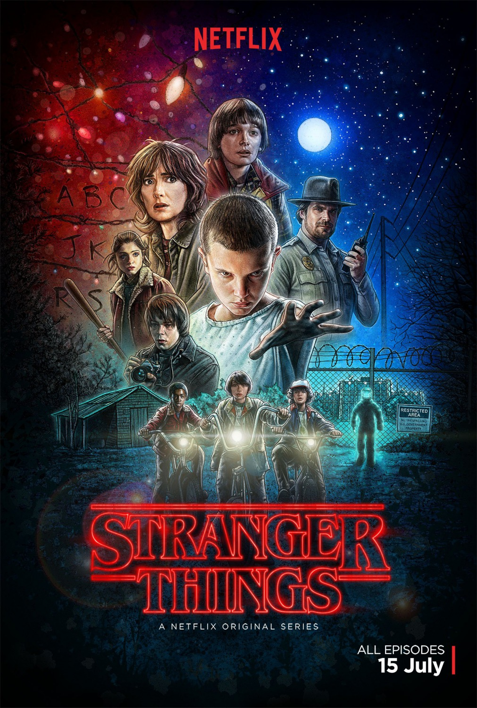
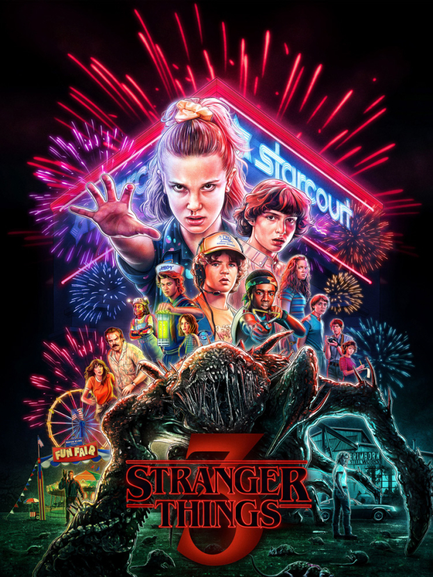
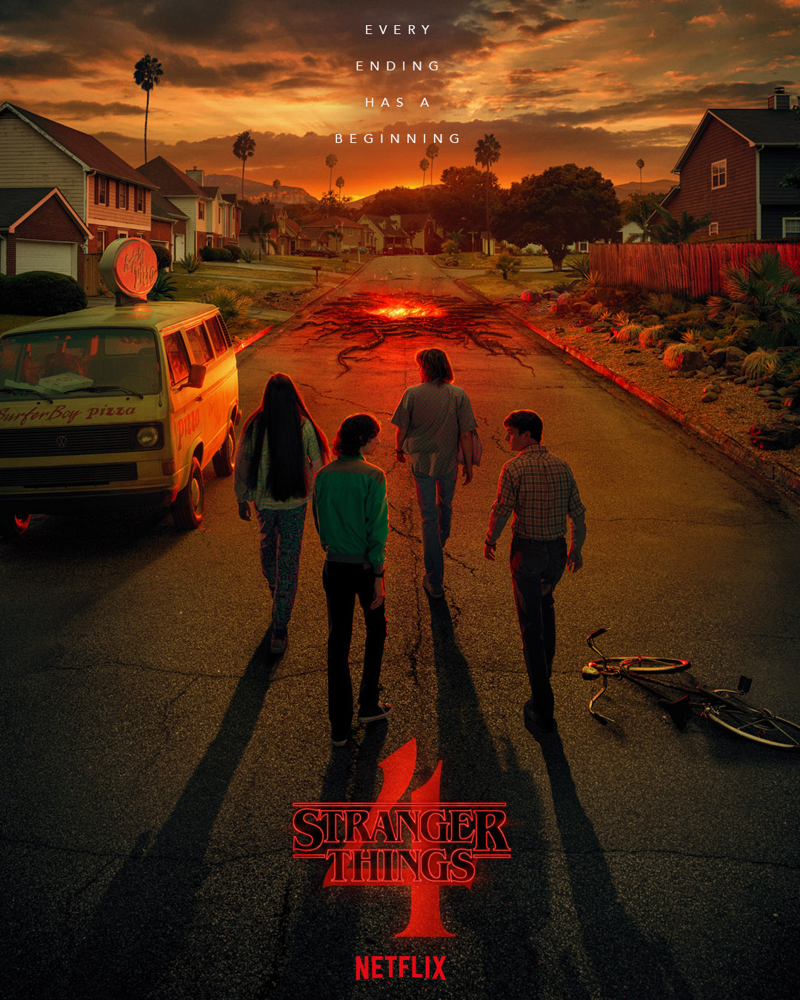

SEASON 1 (2017)
In the first season of "Stranger Things," a young boy named Will Byers goes missing in Hawkins, Indiana, in the 1980s. His friends search for him, uncovering a girl with supernatural powers named Eleven. Together, they encounter a parallel dimension called the Upside Down and confront a menacing creature. As they unravel the mystery, the season explores themes of friendship, government conspiracy, and supernatural phenomena.
SEASON 2 (2016)

In the second season of "Stranger Things," set a year after the events of the first season, Hawkins faces new supernatural threats. Will Byers struggles with the aftermath of his time in the Upside Down. A mysterious girl with abilities similar to Eleven, named Kali, emerges. The group faces a larger, more menacing force from the parallel dimension, while relationships among the characters evolve. The season delves deeper into the mythology of Hawkins and introduces new characters, expanding the scope of the supernatural mysteries within the small town.
SEASON 3 (2019)
In the third season of "Stranger Things," set in the summer of 1985, the residents of Hawkins face new challenges as they encounter a threat from the Upside Down. The kids navigate the complexities of adolescence, and relationships evolve. The group faces a new monstrous entity, and Eleven discovers more about her past. The season combines elements of horror, science fiction, and 1980s nostalgia, delivering a thrilling continuation of the supernatural adventures in the small town of Hawkins.
SEASON 4 (2022)

In March 1986, eight months post-Starcourt mall events, "Stranger Things" characters confront a new supernatural threat—monster "Vekna."
The season unfolds through three plotlines:
The Hawkins Mystery involves Dustin, Max, Steve, Nancy, Robin, Lucas, and Erica investigating mysterious teen murders, suspecting Eddie.
Their inquiry leads to the discovery of Vekna's involvement.
In the California Visit, Mike travels to see Eleven, joining Dr. Brenner and Sam Owens in a secret bunker. Meanwhile, Mike and others
embark on a mission to find and free Eleven.
The Rescue Mission revolves around Joyce and Murray learning of Hopper's possible survival. As Hopper remains captive in a Soviet prison,
he prepares to face a captured demogorgon. The season weaves these narratives into a thrilling continuation of the supernatural adventures
in Hawkins.